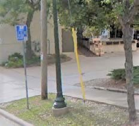

Improving Bus Stops By Adding Amenities
April 1, 2019
|

The state of our bus stops may not garner the kind of media attention that a $30 million price tag for a new storage facility does. Nor might a nicely endowed stop cost even half as much as one new off-street parking stall let alone a few yards of asphalted street. But bus stop conditions do attract or turn off potential riders and speak volumes about what a community really thinks of its transit system, how it prioritizes transit in its budget, how it allots TIF(Tax Incremental Financing) funds and/or how it makes land use decisions. Is the stop a mere post in the ground where people must wait for the bus by standing in the wind, rain/snow and dark? Or can they wait by sitting in a sheltered and lighted, even heat-controlled area? Does the stop have schedule information that tells waiting clients when their ride is coming? Is there a trash receptacle nearby? Is the area cleared of snow and ice? Can it be accessed by someone needing a curb cut and sidewalk? Is it designed for all-door boarding? Are bus riders being told that society cherishes them for their frugality and low carbon footprint or are they being told the opposite? Does one honestly think that people choose to wait at an unsheltered stop if they could travel more comfortably some other way? In March of 2018, researchers at the University of Utah released an unusual and important study that tracked the result on ridership of bus stop improvements in the Salt Lake City area. Given "how focused most transit agencies are on calculating the fiscal and ridership impacts of other types of capital investments" they had expected to find more attention to the notion of a measurable return on investments in bus stop amenities. They did not. But using a method they called "propensity score matching," they found (p. 1): ... that the improved bus stops are associated with a statistically significant increase in overall ridership and a decrease in paratransit demand, compared to the control group stops. Specifically, between 2013 and 2016, improved bus stops saw ridership increases that were 92% higher than increases at the control group stops, while also experiencing ADA paratransit demand increases that were 94% lower than at the control stops.
Much closer to home and following on the heels of the Utah study, our own Madison Area Transportation Planning Board issued an important study of our bus stops. And echoing the Utah's study finding of a curious level of inattention to the "fiscal and ridership impacts" of capital investment in bus stop amenities by most transit agencies, it diplomatically reported that " ... Metro has had a simplistic method for identifying needed bus stop amenities."
It then proceeded to document the numerous problems with many of "Metros 2,112 active transit stops" given the general guidelines contained in the 2013 Transit Development Plan (TDP). Just having a complete inventory of stops was one of the challenges. But then, instead of exposing the TDP's faulty logic in setting guidelines for bus stops amenities, it compounds the error. Amenity guidelines in the TDP are that 1) All bus stops should have signs and a concrete platform at the front door; 2) Stops where at least 15 people board the bus on a daily basis should also have benches and schedule information; and 3) stops where at least 30 people board should additionally have shelters.
The guidelines are faulty because they are reactive rather than proactive or creative. Bus riders are attracted to stops with more amenities, not the other way around. Why should they stand at an exposed stop that might (or might not) get a shelter in another five more years? Anyone who has ever even contemplated using the bus has thought about this. But it is precisely this kind of unimaginative thinking that pervades Metro management, that aides and abets Metro's downward spiral in service. That is one reason the Utah study is so valuable and unusual, even documenting increased ridership resulting from a proactive approach in language that managers should be able to understand.
Instead of exposing the illogic however, the Transportation Planning Board's recent report on bus amenities doubled down on it, adding a ridiculous "transit density" criterion to the already flawed guidelines. It suggests that a stop located in a "single use" or suburban setting should require a daily boarding of 20 to warrant having a bench, 30 to have a shelter. In contrast, a stop located in a "mixed use" area better designed for transit should require 35 boardings for a bench and 50 for a shelter. And even worse, a stop in the "transit dense" downtown/campus area should require 75 boardings for a bench and 100 for a shelter. Using the more logical per capita approach would result in proposing the exact opposite.
Curiously, the rationale for adding even harsher requirements is "funding constraints"(p.27):
This has led to many stops meeting the thresholds for improvements and not receiving them due to funding constraints. For examples, 481 bus stops meet the 15 passenger-per day threshold to qualify for a bench; however, only 305 stops have one. ... For shelters, 277 stops meet the 30-passenger-per-day threshold to warrant a shelter, however, only 220 stops have one.Adding another contradiction, the report then suggests ways to procure additional funds for amenities: 1) advertise at benches and shelters and invest the revenue back into more bus stop amenities; 2) use city placemaking grant funds to make neighborhood bus stops simultaneously more artistic and comfortable; 3) use some of Metro's Surface Transportation Block Grant (STBG)-Urban program funds for bus stop amenities instead of exclusively toward the purchase of buses. Glaringly missing from the Transportation Policy Board's report is mention of Tax Increment Financing (TIF) separate from Bus Rapid Transit. Any transportation-related capital expense near or in a TIF-designated district (TID) is eligible. And city engineers and others have used TIF money to resurface roads and finance huge parking lots. If the economic role and/or economic development potential of public transportation were honestly given its due compared to street resurfacing or off-street parking, more investment would be made in the much less expensive bus stop amenities. Improving bus stops could make traveling via transit in Madison much more appealing and increase ridership. |